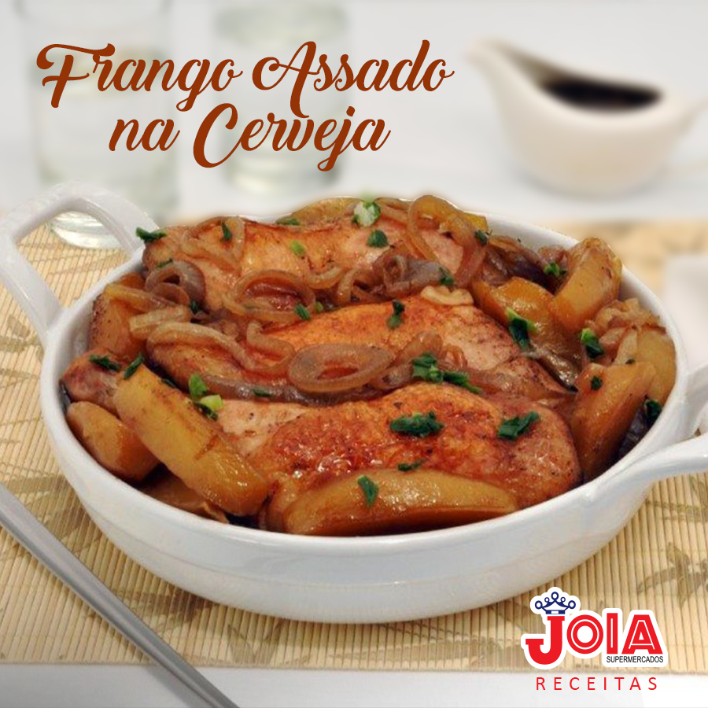

Frango assado na cereja
Ingredientes:

- 1 kg de Sobrecoxa de frango.
- Creme de cebola: 1 pacote.
- Cerveja: 1 lata.
Modo de preparo
- Preaqueça o forno a 180°C.
- Com uma faca bem afiada, retire o excesso de gordura e pele das sobrecoxas de frango.
- Unte uma assadeira quadrada de 20x20cm com azeite e coloque o frango dentro.
- Espalhe o creme de cebola por todo o frango, incluindo a parte entre a pele e a carne.
- Abra uma lata de cerveja e espalhe sobre o frango.
- Cubra com papel alumÃnio e leve ao forno por 1h20m.
- Passado esse tempo, retire o papel alumÃnio e leve novamente ao forno para dourar o frango.
- Depois que dourar, desligue o forno e sirva em seguida.